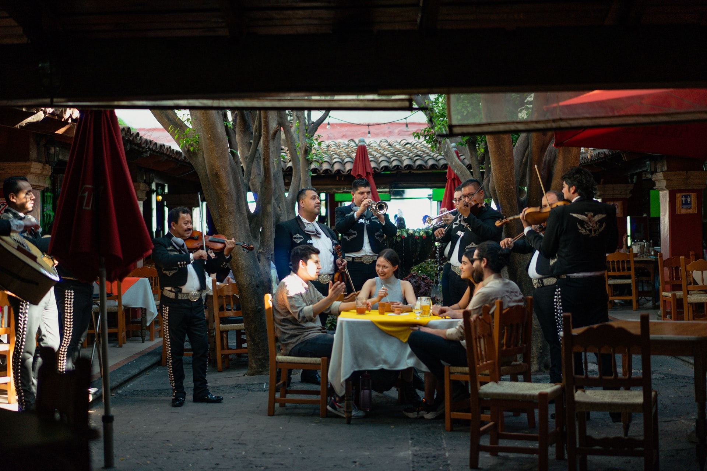

.png)

La música clásica (también llamada música académica) es la corriente musical que se basa principalmente en la música producida o derivada de las tradiciones de la música litúrgica y secular de Occidente, principalmente Europa Occidental, y que posee un referente de transmisión fundamentalmente de tipo escrito, lo cual le da un sentido y carácter riguroso para su reproducción o interpretación.
La música norteña, es un género de la música regional mexicana. El acordeón y el bajo sexto son los instrumentos más característicos. Este género es popular tanto en México como en Estados Unidos, especialmente entre la comunidad mexicana y mexicoestadounidense. Se ha popularizado en otros países de habla hispana, entre los cuales destacan Colombia, Chile y España. Aunque es originario de zonas rurales, el norteño es popular tanto en zonas urbanas como rurales.
Es un deporte de raqueta que se juega bajo techo, con dos jugadores y una pelota pequeña de goma. Los jugadores se turnan para golpear la pelota con su raqueta, en dirección hacia la pared frontal y por encima de una banda metálica. La pelota deberá ser golpeada antes que rebote dos veces en el suelo, pudiendo hacer uso de las paredes laterales y trasera. El jugador que falle en la devolución pierde el punto.